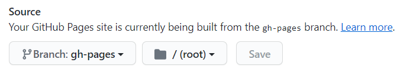

Building Blog Using Hugo
用Hugo搭建自己的博客吧！
摘要
在Windows平台下安装、配置Hugo，并通过Github Pages部署个人博客
前言
本来打算把这篇文章作为博客的第一篇post，结果拖了将近半年 ╥﹏╥…
写这篇文章一是为了给自己的博客留个纪念；二是梳理一下自己大体的博客搭建流程，方便后期debug甚至重构；三或许还能帮助到一些有缘人？
听说百度的爬虫爬不到github.io域名的内容，再加上这种个人博客本身就做不到很好的SEO。以后的博文大概率也就是一名新手“码农”的“自嗨” ︿(￣︶￣)︿，不过能有一个整理自己笔记和想法的小空间也真是一件很开心的啊！希望能坚持下来！
不多bb，准备开始！
先决条件
我使用的工具：
- Git 2.30.0
- Hugo v0.80.0
- 一个注册好的GitHub账号
前置知识：
- 了解最最基本的Git操作
- 对GitHub有一点点了解
- 会使用markdown编写文章
- 难度不大，但还是希望你有一颗勇于折腾的心
更新并配置Git
git --version # check the version of git
git update-git-for-windows # update git to the latest version
GitHub最近（当你看到这篇文章的时候已经不是最近了）把原先默认的master分支改名成了main，为了紧跟潮流，也为了满足自己的强迫症，这里选择更新git版本
# 配置
git config --global user.name "<user_name>"
git config --global user.email <example>@gmail.com
git config --list
更多Git基础操作可以参考 我的笔记。
安装Hugo
相较于Mac和Linux，Hugo在Windows下的安装相对复杂。我们这里选择使用编译好的Windows可执行文件进行安装。安装路径我选择D盘的根目录，你也可以选择其他路径。
-
在D盘根目录下创建新文件夹
Hugo，并在D:\Hugo下新建文件夹bin和SitesD:\Hugo\bin将存放Hugo可执行文件D:\Hugo\Sites将存放以后博客的git仓库
-
到 Hugo的GitHub仓库下载最新的Hugo二进制文件，我下载的是
hugo_0.80.0_Windows-64bit.zip -
解压下载好的压缩包至
D:\Hugo\bin。现在你应该能看到D:\Hugo\bin中有三个文件hugo.exe,LICENSE及README.md。在
D:\Hugo\bin下打开cmd，执行hugo version和hugo help应该能得到适当的反馈。但在其他路径下，这两条命令却无法正确执行，所以接下来我们要配置系统环境变量，使Hugo命令可以在任意路径下使用 -
为Hugo配置系统环境变量
-
搜索并打开Edit the system environment variables
-
点击Environment Variables…
-
在User variables中双击Path
-
点击New，添加
D:\Hugo\bin -
验证环境变量是否配置成功
echo %PATH% # 确保能找到D:\Hugo\bin hugo version # 在任意路径下均可正确执行（注：配置完环境变量后，可能需要等一段时间才能正常使用Hugo命令）
-
恭喜！现在Hugo已经安装完成，接下来我们用它开始搭建自己的博客吧！
搭建本地博客
初始化博客
在D:\Hugo\Sites下启动cmd，使用命令
hugo new site <name>
由于我们将把本地博客部署到GitHub，这里我们把<name>换成<github_user_name>.github.io，比如我使用hugo new site Chen-Gary.github.io
你会发现Hugo在D:\Hugo\Sites下创建了一个新文件夹Chen-Gary.github.io里面已经包含了一些文件
下载主题
（如果没有特殊说明，所有命令都默认在博客的根目录下执行，即/d/Hugo/Sites/Chen-Gary.github.io）
在 Hugo主题库找到一个你喜欢的主题，下面的步骤将以 Stack为例。下载主题本质就是git克隆，通常这些主题都会在README或 Documentation中提供克隆命令（也可以下载对应主题GitHub上的release版本，操作类似，请参考对应主题的Documentation）
git clone https://github.com/CaiJimmy/hugo-theme-stack/themes/hugo-theme-stack
（注：如果采用下载release版本主题的方法，请忽视以下内容）
克隆完成后，themes/hugo-theme-stack会是一个给git仓库，由于后期我们会将把博客的根目录Chen-Gary.github.io也变为git仓库，为避免仓库套仓库的情况，这里有两种解决策略：
- 删除
themes/hugo-theme-stack中的，.git文件下把git仓库变成普通文件夹（我采取这个方案，因为后期我们可能大规模“定制”下载的主题，需要对主题内的文件进行版本控制；另外，还因为我不太搞得懂git submodule。。。） - 使用git的submodule feature（不太推荐）
本地测试
使用以下命令测试。值得注意的是Stack主题有一些很坑爹的细节，搞了我很久。下一小节我会详说。
hugo server -t <theme_name> --buildDrafts
# example
hugo server -t hugo-theme-stack --buildDrafts
根据命令行提示，在浏览器进入http://localhost:1313/预览博客效果。
测试完成后，使用Ctrl + C结束server。
修改配置文件
修改博客根目录下的config.toml或config.yaml。注意很多主题是会提供配置文件样板的，如果有请使用主题提供的配置文件。config.toml和config.yaml只需一个（也只能有一个），删除多余的配置文件。
至少进行以下配置（以config.toml为例）：
baseURL = "https://<github_user_name>.github.io/"
languageCode = "en-us"
title = "Gary's Blog Site"
theme="theme_name"
由于在配置文件中指定了主题，以后进行本地测试只需：
hugo server
baseURL相当重要，这里提前配置好，后文会进一步解释。
*关于Stack主题
Stack是个相当好看的主题。事实上，这个主题是吸引我使用Hugo的原因之一，但是有一些小细节相当坑爹（对于新手来说）。
在进行本地测试之前，执行以下操作：
- 复制
\themes\hugo-theme-stack\exampleSite的内容至博客根目录，部分原有的文件会被覆盖。 - 删除Hugo原先自动生成的
config.toml，以后的配置我们会直接使用Stack主题提供的config.yaml。 - 删除
\content\post\rich-content。原因是这篇sample post里使用了推特短代码，这会导致Hugo无法生成网页。 - 更多个性化操作请参考Stack主题提供的
config.yaml文件及 它的官方文档。如果你愿意也可以修改主题的HTML文件等。。
至此，你已经拥有了自己的本地博客库，并预览了发布后的效果。接下来可以开始写博文了！
本地发布博文
使用以下命令新建博文
hugo new post/<article_name>.md # new blog/article
hugo new post/<article_name>/index.md # new blog/article (recommended)
空白的博文会被生成在\content\post目录下。
注意：
-
<article_name>使用连字符隔开单词 e.g.hugo new post/git-basic-skills/index.md -
推荐使用
hugo new post/<article_name>/index.md，这样文章中的图片可以放在\content\post\<article_name>中
现在，你可以使用喜欢的markdown编辑器编写博文。完成后用hugo server命令进行本地测试。
生成网页
有了前面的铺垫，生成网页相当简单，完整命令如下：
hugo --theme=<theme_name> --baseUrl="https://<user_name>.github.io" --buildDrafts
# a folder `public` will be created
# example
hugo --theme=m10c --baseUrl="https://Gary-Hh-Chen.github.io" --buildDrafts
由于theme及baseUrl已在配置文件 (config.yaml) 中设置好了，命名可以被简化为：
hugo
就是这么简洁，网页会被生成在博客根目录的public文件夹中。
部署博客至GitHub
以下方法由Hugo官方文档修改得来。不知道为什么， 这部分的官方文档被简化了很多。之前的文档虽然有bug，但相当详细。好在我们可以在 官方文档的GitHub仓库下载旧版文档。我参考的是 v0.80.0版本的文档。
我们借助GitHub Pages服务部署博客。
这里，我们选择从GitHub仓库的gh-pages分支发布网页。除此之外，还可以：
- 从
main分支直接发布网页 - 从
main分支的docs文件夹发布网页
这里我们不讨论三种方法的优劣，具体优劣可以参考 旧版官方文档。具体操作如下：
（注：以下步骤只需操作一次）
1. 建立仓库
在GitHub建立新的public repository（空仓库，不添加README等），仓库的名字必须为<github_user_name>.github.io，如Chen-Gary.github.io。
2. 修改.gitignore
把public文件夹加入.gitignore，因为我们不需要把生成的网页推送到main分支。
echo "public" >> .gitignore
3. 链接本地仓库
在博客根目录下，使用以下命令建立git仓库并链接至远端：
git init
git remote add origin https://github.com/<user_name>/<user_name>.github.io.git
git add .
git commit -m "first commit for my blog"
git push -u origin main
此时博客的源文件已被推送到远端仓库。
4. 初始化gh-pages 分支
说实话，后面这几个分支操作我是不太懂的。。。不过，能用就行不是吗？
You can now initialize your
gh-pagesbranch as an empty [orphan branch][]:
git checkout --orphan gh-pages
git reset --hard
git commit --allow-empty -m "Initializing gh-pages branch"
#git push upstream gh-pages
git push origin gh-pages
git checkout main
5. 生成网页并部署
Now check out the
gh-pagesbranch into yourpublicfolder using git’s [worktree feature][]. Essentially, the worktree allows you to have multiple branches of the same local repository to be checked out in different directories:
rm -rf public
#git worktree add -B gh-pages public upstream/gh-pages
git worktree add -B gh-pages public origin/gh-pages
hugo
cd public && git add --all && git commit -m "Publishing to gh-pages" && cd ..
#git push upstream gh-pages
git push origin gh-pages
6. 设置仓库
在刚刚建好的GitHub仓库页面进入 Settings > Pages > Source，进行以下设置：

设置为从gh-pages分支发布网页。
等上一小会，你的博客就部署成功了！你可以在 https://<github_user_name>.github.io/ 访问你的博客！
但是，等等，每次更新博客都要进行这么多命令行操作吗？这也太麻烦了吧！好在我们可以写一个脚本，把部署需要的命令都写在脚本里，就不需要每次都敲这么多命令了。
自动化更新博文
接下来我们将写一个.sh script帮助我们部署网页。
在博客根目录下新建deploy_to_ghpages.sh，加入以下代码：
（注：以下代码由Hugo官方文档的代码修改而来）
#!/bin/sh
if [ "`git status -s`" ]
then
echo "The working directory is dirty. Please commit any pending changes."
exit 1;
fi
echo "Deleting old publication"
rm -rf public
mkdir public
git worktree prune
rm -rf .git/worktrees/public/
echo "Checking out gh-pages branch into public"
git worktree add -B gh-pages public origin/gh-pages
echo "Removing existing files"
rm -rf public/*
echo "Generating site"
hugo
echo "Updating gh-pages branch"
cd public && git add --all && git commit -m "Publishing to gh-pages (deploy_to_ghpages.sh)" && cd ..
echo "Pushing to github"
#git push --all # use this command or `git push origin gh-pages` should be both OK
git push origin gh-pages
这段代码大概做了：
- 检查仓库是否有未commit的修改，如有，则终止部署
- 如果仓库clean，则自动重新生成新的网页，并推送网页至gh-pages分支
将deploy_to_ghpages.sh commit 进仓库。
至此所有准备工作都已就绪，你可以开始在自己的博客中发布文章了！如果你已经忘记了之前提到的一系列命令，没关系，下一节我会整理发布或更新博文所需的全部命令！
总结 - 发布博文流程
如果你按照以上流程初始化好了你的博客，接下来想要更新文章会非常简单：
（注：由于.sh文件需要在git bash中执行，以下命令默认都在git bash中执行）
git status
hugo new post/<article_name>/index.md # new blog/article (recommended)
# 编写博文...
hugo server # local test (optional)
git add .
git commit -m "add new post XXXX"
git push
./deploy_to_ghpages.sh # deploy
同时，我们也梳理一下GitHub仓库的文件结构：
main分支：博客的源文件，可以通过这些源文件生成网页。你需要在这个分支上，对博客源文件进行正常的版本控制。gh-pages分支：由Hugo基于博客源文件生成的静态博客网页，是GitHub Pages生成网站所需的所有内容。这个分支纯由Hugo生成，无需对该分支的版本进行过多理会。
至此，借助Hugo和GitHub搭建个人博客的全部流程都结束啦！开始经营这个属于自己的小天地吧！
附录
好看的主题
多语言支持
https://pzhao.org/zh/post/hugo-multilingual/
https://gohugo.io/content-management/multilingual/
https://regisphilibert.com/blog/2018/08/hugo-multilingual-part-1-managing-content-translation/
SVG图下载
Gary Chen
Computer Engineering Student
Undergraduate majored in computer engineering @CUHK(SZ), interested in game development, blockchain, etc.